Executive
The Executive team manages the day-to-day operations of the organization while planning the semester's large-scale events and activities. From co-hosting speaker panels to leading our premier professional development workshops, the Executive team embodies the PBL values and the hallmarks of personal and professional success.
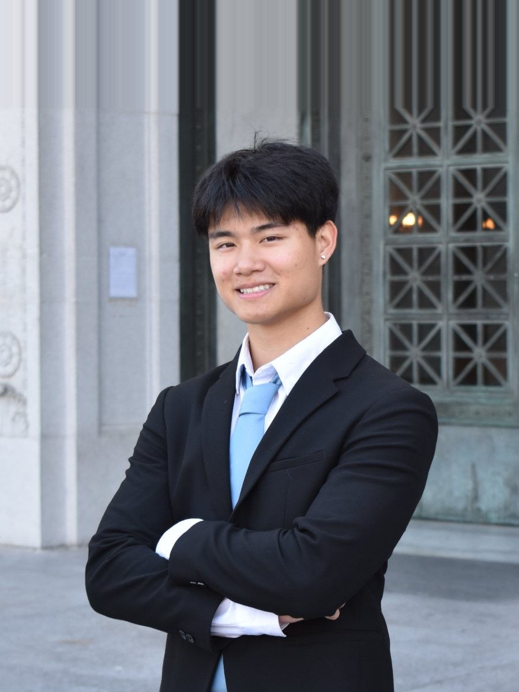
Angelo Bounthapanya
Co-PresidentHi! My name is Angelo Bounthapanya, and I'm a senior from the Bay Area studying Economics. My professional interests include aspects of both finance and consulting. I previously interned at Praxis Ventures as a summer capital intern, and more recently at EY-Parthenon this past summer. My hobbies include going to the gym, watching sports, and spending time with my friends. Feel free to reach out and schedule a time to talk.
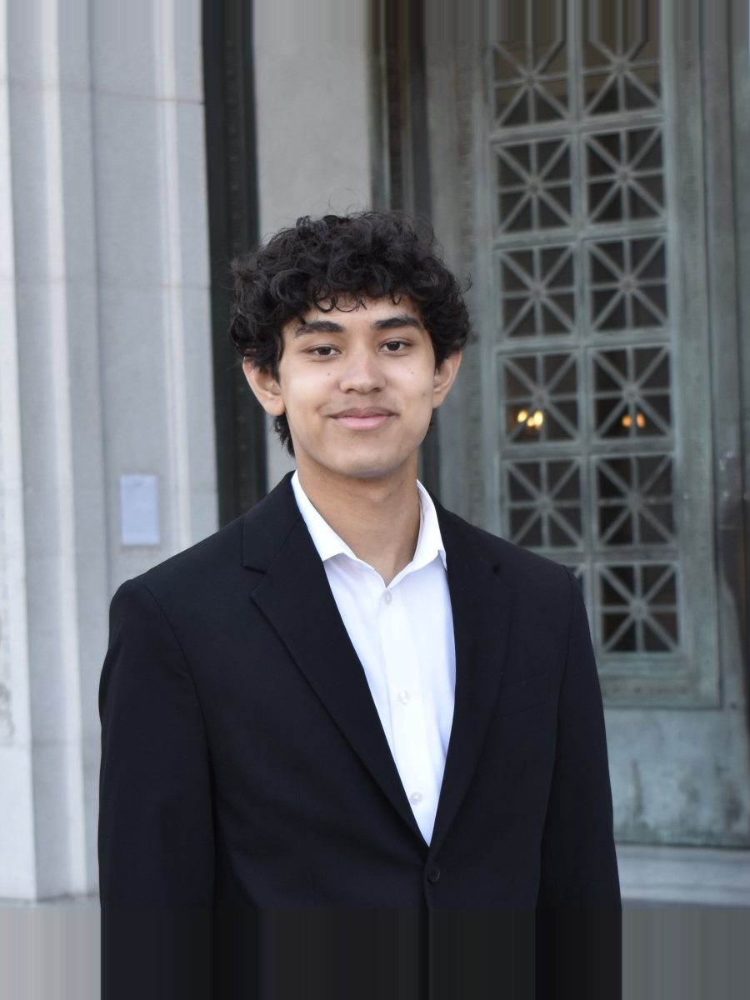
Avik Gautam
Co-PresidentHi! My name is Avik, and I'm a Senior studying Computer Science. I am interested in software engineering, as well as brand strategy and creative advertising. I have been a 2-time SDE intern at Amazon working on the back-end of their Photos on-device experience. I also love teaching and have taught both within PBL as chair and VP Dev as well as through course staff for 61b. Outside of work, I love watching basketball and soccer, and playing or listening to music. Excited to meet you all!
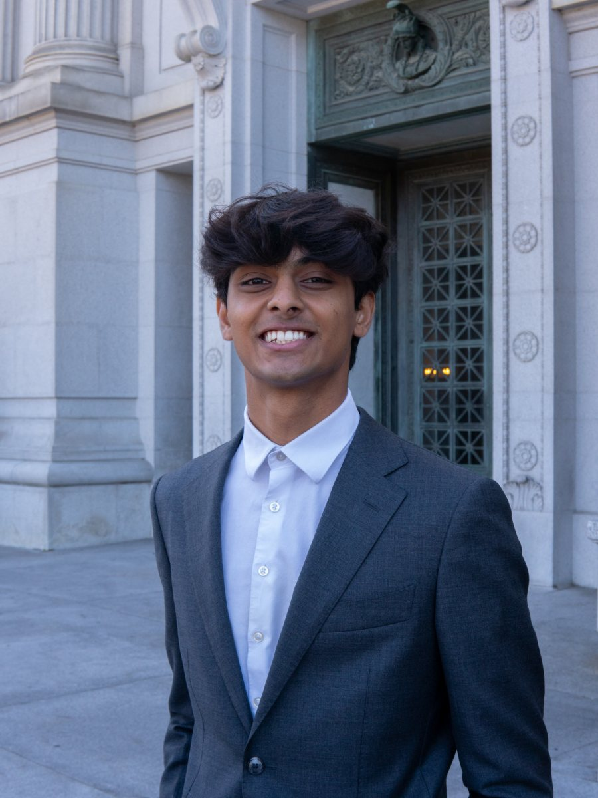
Ayush Gupta
Vice President of OperationsHi! My name is Ayush and I’m a senior from the Bay Area studying Data Science. My professional interests lie in Software Engineering and I’ve previously worked at both Amazon and Meta as a SWE intern. I also love teaching and for the past few semesters I’ve been on course staff for CS 61B as a tutor. Some of my hobbies include photography (@gups.jpeg tap in!), playing pickleball, and trying new food. I’m really excited to meet all of you!!
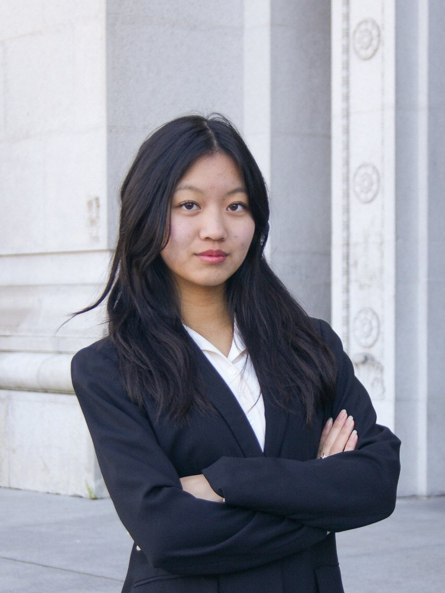
Irene Li
Vice President of DevelopmentHi! My name is Irene and I’m currently a junior studying Statistics. I'm interested in the application of data analysis within different fields, such as economics. In the past couple semesters, I've worked on PBL's Lenovo, Life360, and Virtue Worldwide client teams to deliver strategy and marketing insights. Outside of PBL, I enjoy listening to music, hanging out with friends, and trying new drink places. Feel free to reach out if you'd like to chat!
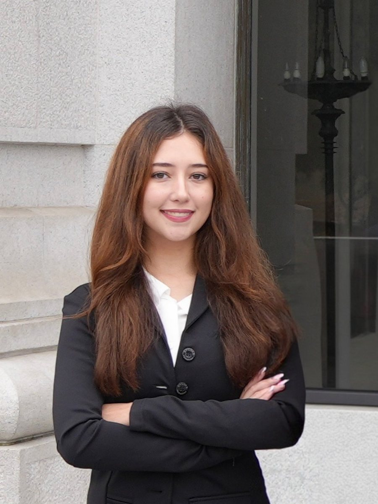
Anabella Eskesen
Vice President of FinanceHey! My name is Bella and I'm currently a junior doubling in Applied Math and Astrophysics. Career-wise, I'm interested in pursuing a higher education and doing research. I tend to lean towards quantitative and tech-heavy roles. My hobbies include skiing, painting, horse riding, and just eating out with friends. Definitely reach out if you have any questions!
Isabella Lee
Vice President of ProjectsHii everyone! My name is Isabella and I’m currently a Junior studying Cognitive Science and Data Science. My passion lies in product and marketing strategy, and exploring how human-centered thinking influences business decisions in the entertainment and tech space. I was previously at CNN under Warner Bros Discovery as a UX Research Intern and worked in Singapore as a web dev. + marketing intern. My hobbies include dancing to hip hop and kpop (check out KPGcal), eating, volleyball, and hanging out with friends. Let’s connect!
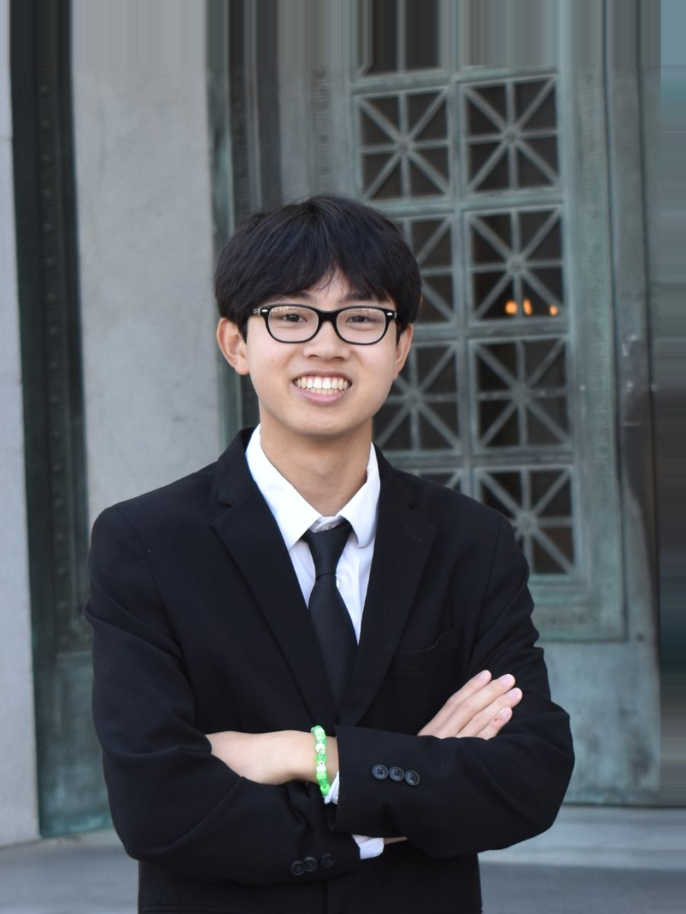
Eric Nguyen
Internal Vice PresidentHellooooo! My name is Eric and I'm a Senior studying Economics and Sociology. My career goals are oriented towards an intersection between Gaming and Entrepreneurship. In PBL this semester, however, my sole goal will be to make sure everyone has a great time! My hobbies including pickleball, fishing, hiking, and hanging out with my friends. Please reach out with any questions you may have!
Internal Networking
While not a committee that takes applicants, the Internal Networking committee is responsible for fostering the social environment of the organization. From planning the semesterly Member's Retreat to organizing countless social events throughout the semester, the Internal Networking committee works hard to encourage a tight-knit PBL community.
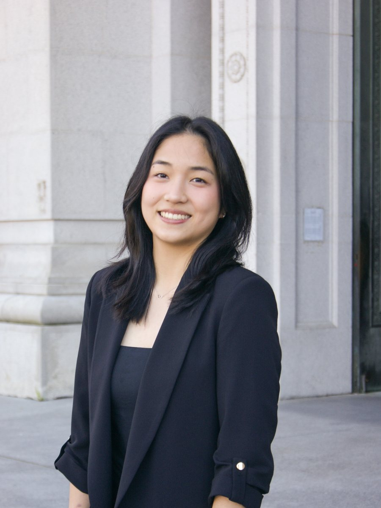
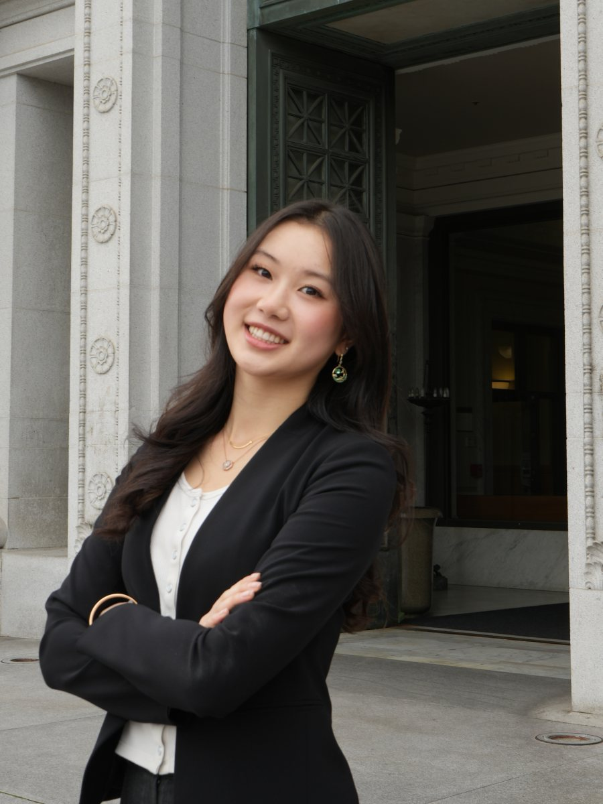
Minseo Park
Internal Networking ChairHi, I'm Minseo, and I'm a junior studying Mechanical Engineering. I'm particularly interested in product design and developing hardware systems that bridge engineering and user experiences. This past summer, I worked as a hardware engineer intern at Skydio and have also been involved in robotics research across several labs where I've explored design, prototyping, and intelligent systems. Outside of academics, I enjoy figure skating, playing guitar, golfing, and going to concerts. Feel free to reach out!
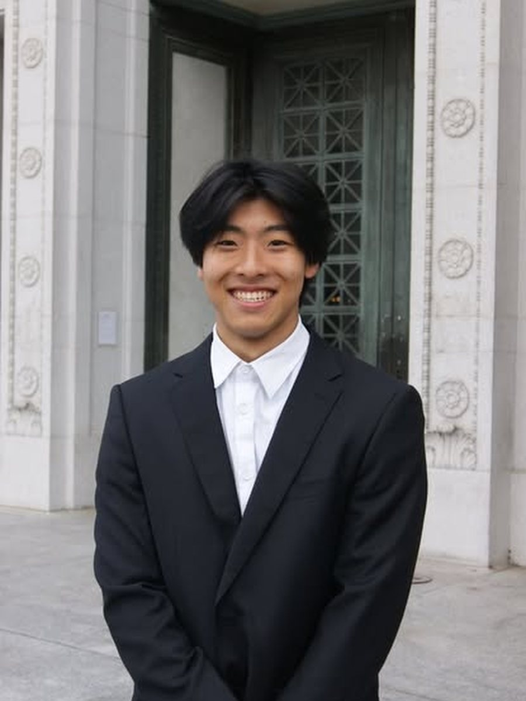
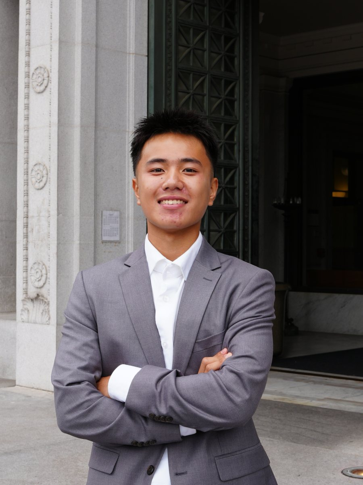
Alex Lee
Internal Networking ChairClient Teams
CT Consulting spearheads PBL's consulting services. Working with a wide array of clients from budding start-ups to Fortune 500 firms, Client Teams allow members to take the knowledge and experience from their industry-specific committee curriculums and apply them to real world projects.
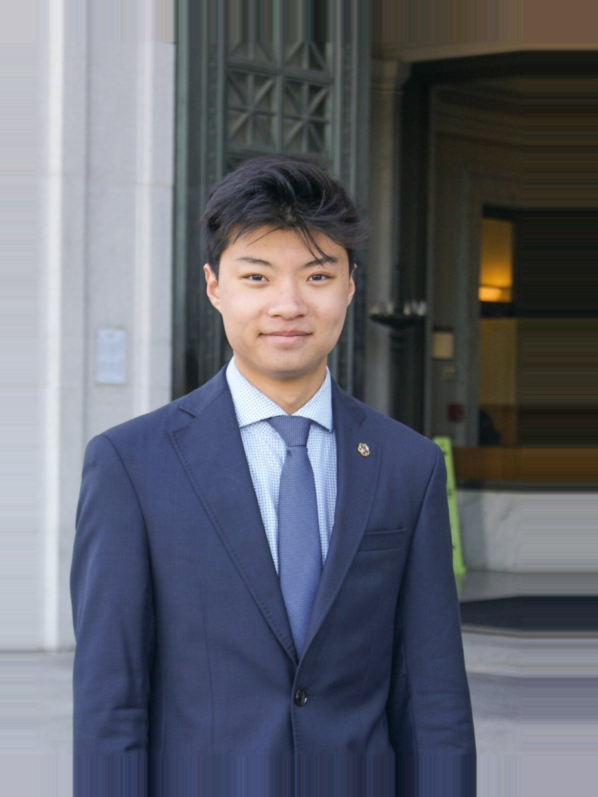
Kainoa Tomikawa
Project ManagerHello! My name is Kainoa and I'm a junior studying Applied Math and Data Science. My career goals are geared towards data analytics and tech however I am also very interested in strategy and business. Previously, I was an AI Engineer intern where I worked on an execution platform that looked to improve software development by utilizing a hybrid team of humans and agents. I enjoy playing soccer, spikeball, going on scenic hikes, and I love watching Dodger baseball. Feel free to reach out with any questions!
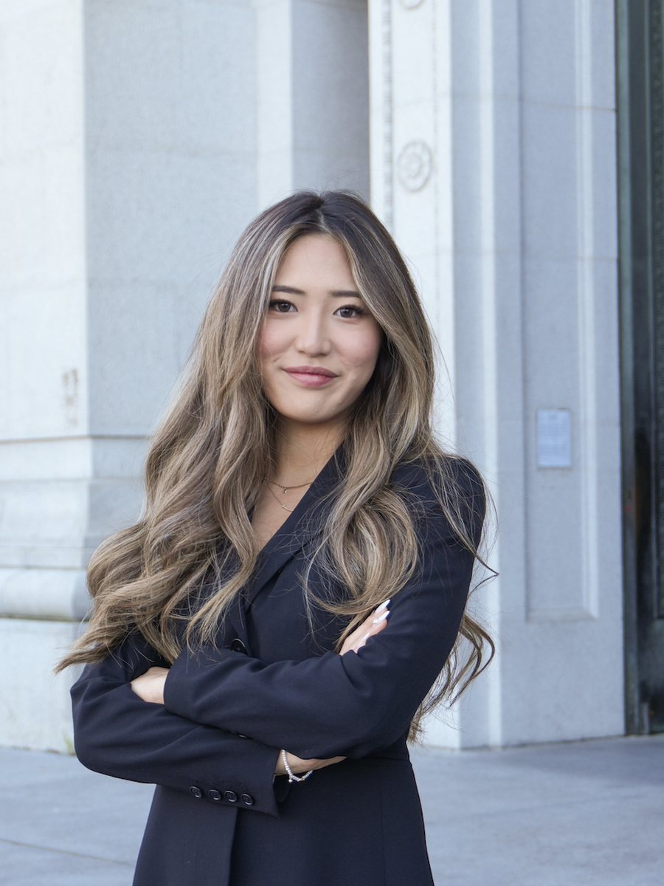
Ashley Park
Project ManagerHi, my name is Ashley and I'm a Junior studying Media Studies! I'm from Seoul, South Korea. My professional goals lie in product marketing and strategy-based consulting in the creative, entertainment, beauty, and fashion fields. I've previously done beauty marketing internships at K-beauty companies like Rom&nd and House of Hur. In my free time, I love to walk, drink caffeine, go to concerts, and hang out with my friends. Feel free to connect or reach out!
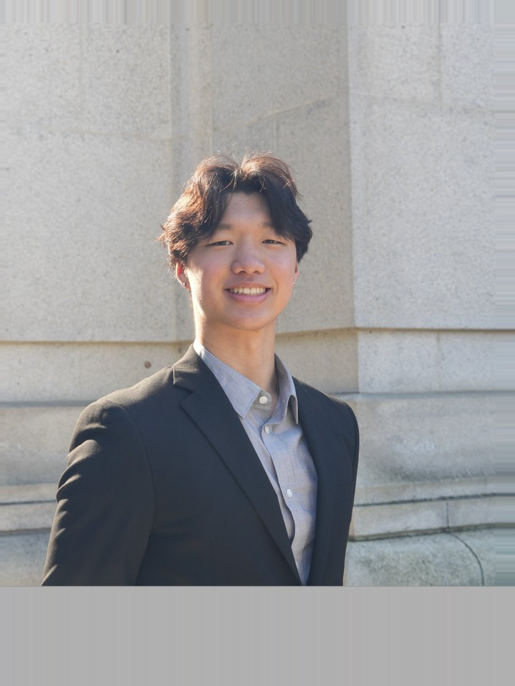
Porter Tien
Project ManagerHello hi wassup! My name is Porter I’m currently a Junior studying Nuclear and Aerospace Engineering. I’m super interested in energy tech (specifically fusion) and entrepreneurship. I’ve done research at UC Berkeley and National Taiwan University and interned at Taller Technologies and Eunergy Microgrid. I love podcasts, basketball, Eileen Gu, and planning to take over the world. Feel free to reach out!
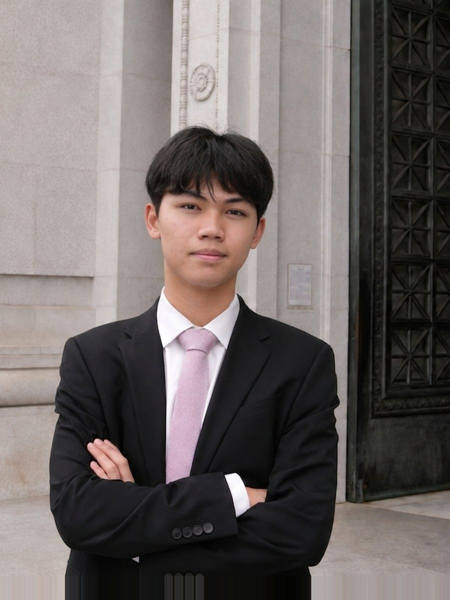
Korey Dang
Project ManagerHi! My name is Korey, and I’m a junior studying Economics and Public Health. I’m interested in the intersection of healthcare and business, particularly within consulting. Previously, I worked as an analyst on PBL’s Meta team and interned at Visa on the Sponsor Bank Strategy team. Outside of academics and career activities, you can find me trying to improve my golf game at the driving range, practicing cello, or watching horror movies. Please feel free to reach out if you have any questions or would like to chat!
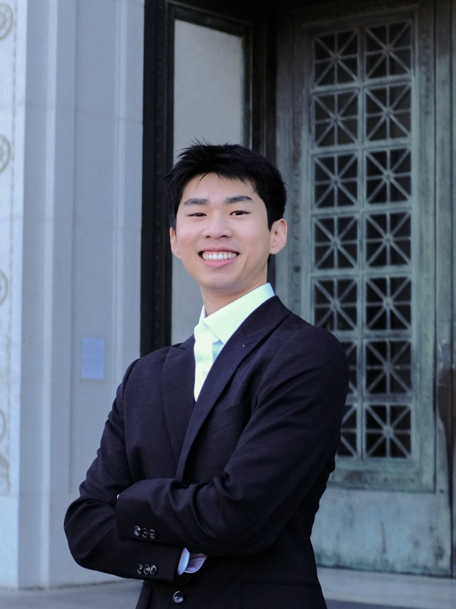
Ryan Teh
Project ManagerHey guys! My name is Ryan and I'm currently a junior studying Business and Public Policy. Professionally, I'm currently interested in corporate finance, accounting, and strategy consulting. I'm interested in applying technology and AI to solve business challenges and problems. I'm an incoming summer core tax intern @ BDO and have been a senior analyst on the past project for VICE Media. My hobbies include working out, trying new food spots with friends, and going to SF. Feel free to reach out!
Kamryn Murillo
Project ManagerHi! I’m Kamryn and I’m currently a junior studying Data Science with a minor in Science, Technology, and Society. I am super passionate about how technology and business can create meaningful impact, with interest in data analytics and product management. I previously interned the San Francisco Federal Reserve as a Data Analytics Intern and AmigoAI as a Growth Marketing Intern. In my free time, you can find me exploring new food spots, creating content, binge-watching shows, or adding to my blind box collection. Feel free to reach out if you have any questions!
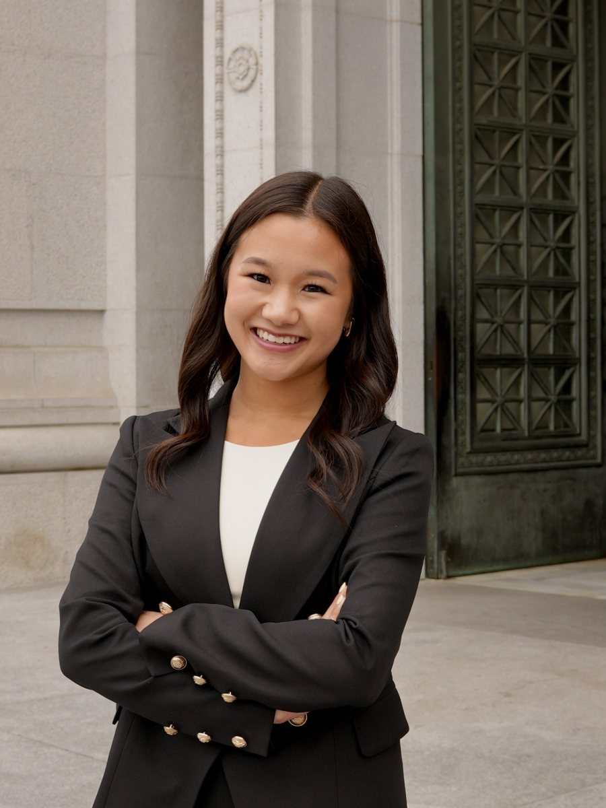
Lauren Wong
Project ManagerHello! My name is Lauren, and I am currently a junior studying Economics. Professionally, I have interests in accounting, consulting, and brand marketing strategy. I am an incoming intern for EY, and have previously worked on projects for BMW. Outside of PBL, I love dancing, taking long walks, traveling, and exploring new places with friends. Feel free to reach out!
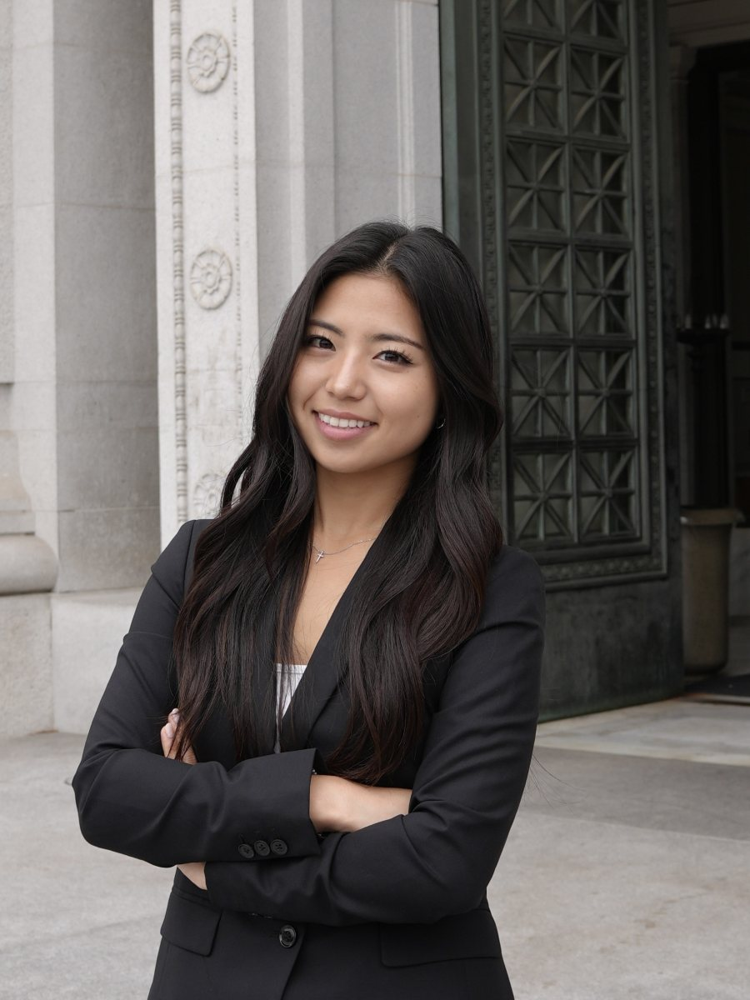
Muse Choi
Project ManagerHi! My name is Muse and I'm a fourth-year studying Microbial Biology. My career goal is in the field of medicine as I am passionate about combining patient care with research to improve clinical outcomes and advance medical knowledge. I am involved in neuroscience research at UCSF, and I spend my weekends working in the OR. Previously, I was a medical intern in Panama, Belize, and Kenya. Beyond academics, I enjoy teaching piano and constructing science experiments at local middle schools. Feel free to reach out with any questions!
Media
Unlike committee chairs, the Media Chairs work with EX to create all the visuals for the semester, including recruitment materials, Instagram posts, promotional videos, and more!
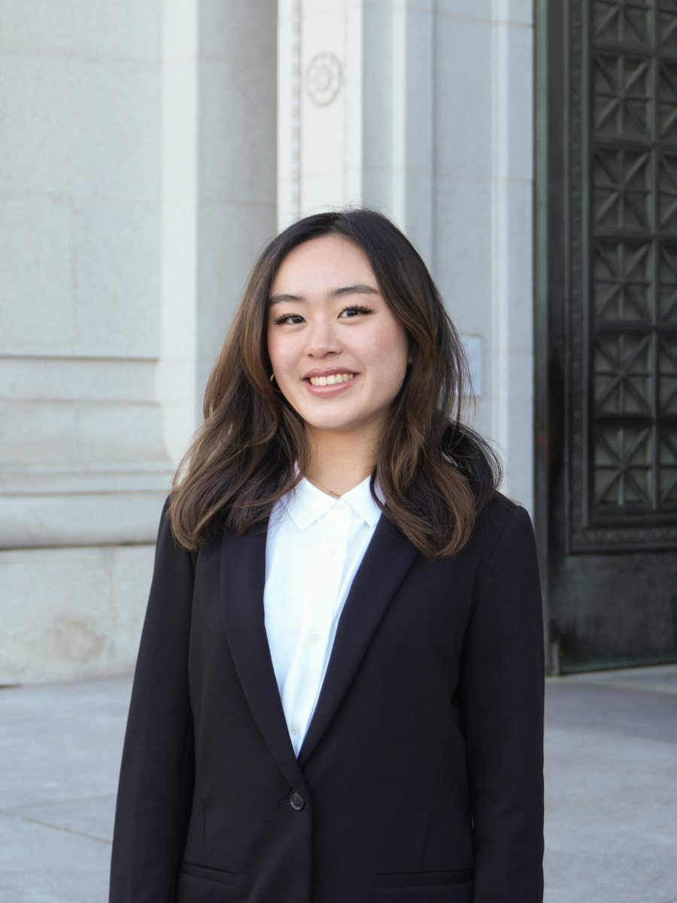
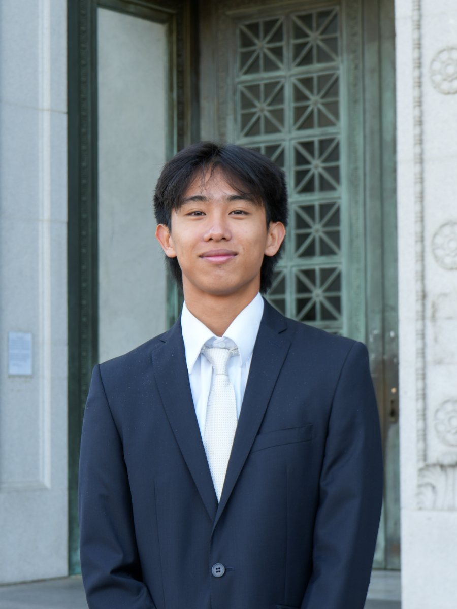
Justin Nguyen
Media ChairHey! My name is Justin Nguyen, and I am studying Mechanical Engineering. I am passionate about biotech, medical devices, and startup culture. I currently do mechatronics research here at Berkeley where I work on hands on projects that involve CAD and coding. I love taking pictures, anything creative and playing all sports with my great friends! Reach out anytime for questions!
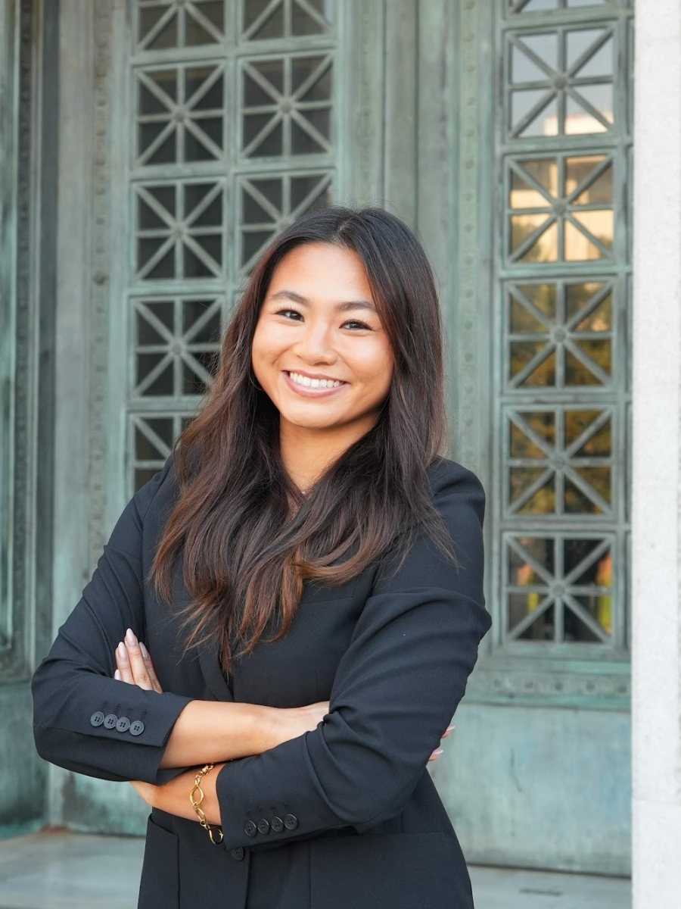
Caren Lee
Media ChairHi, my name is Caren Lee and I’m currently a junior majoring in Econ and Dance. My career goals are towards marketing specifically in the fashion, lifestyle, and entertainment industries. My hobbies include dance, going to corepower, and trying new foods with friends! Feel free to reach out with any questions at all!